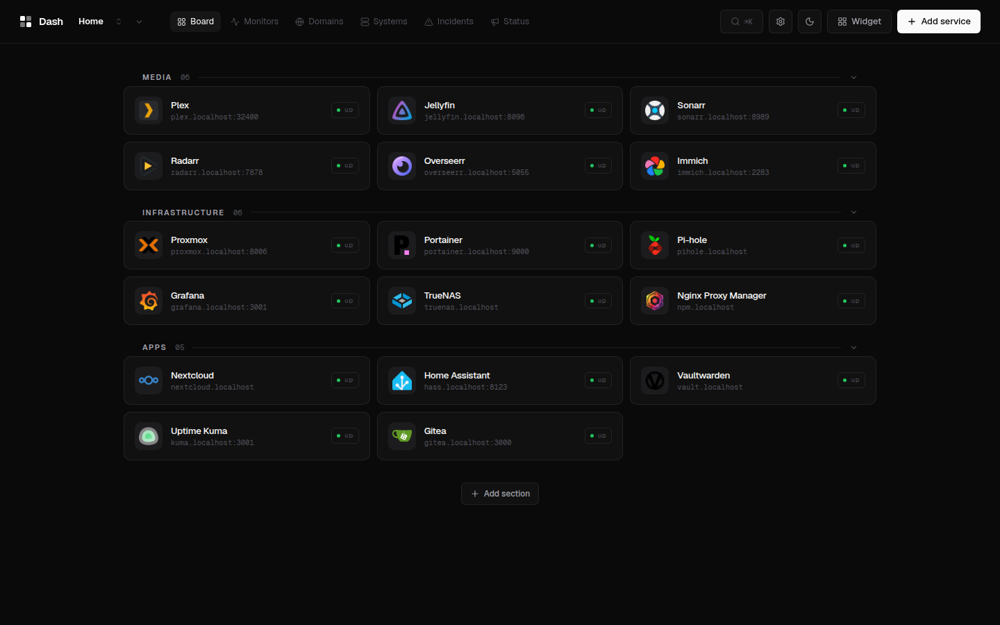
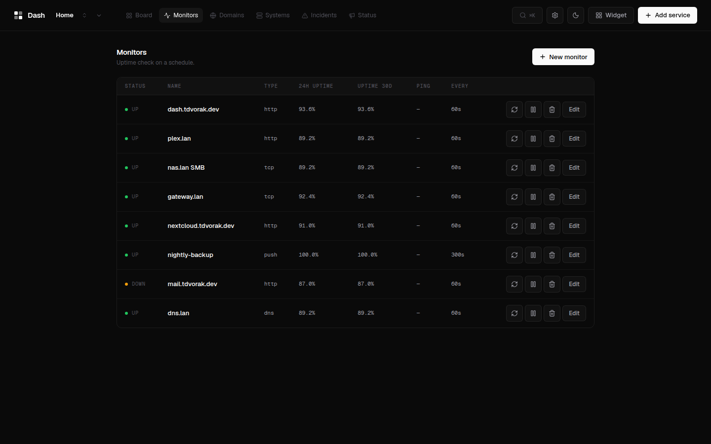
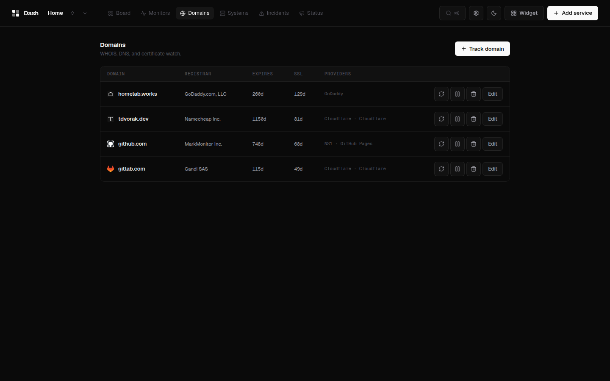
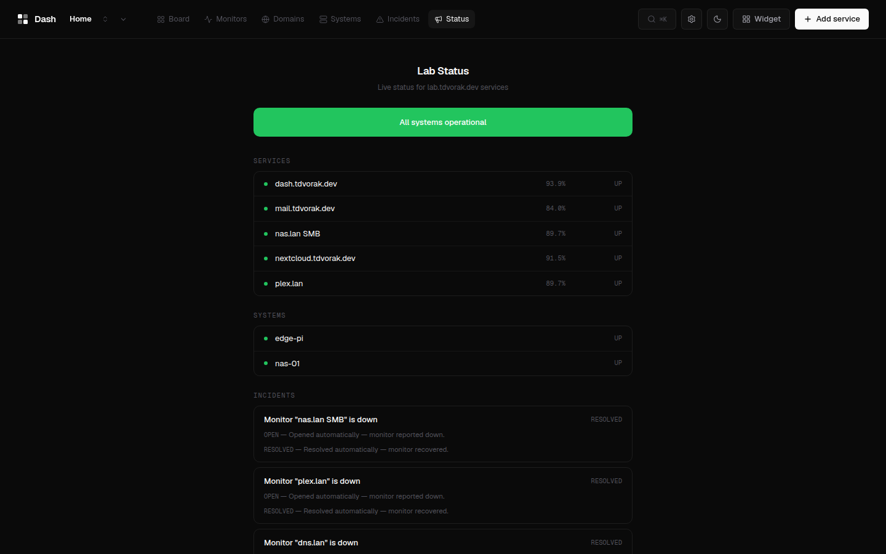

Dash is a self-hosted dashboard: service boards, uptime monitors, domain watch, and system metrics in a single static Go binary with the UI baked in. No YAML, no external database, no mandatory accounts.

Sections, drag-and-drop, multi-URL services, icon upload. Four renderers - Bento, Cards, Index, Console - share one state, so the look is a setting, not a migration.
HTTP, TCP, ping, DNS, keyword, JSON-path, and push checks with heartbeat history, latency graphs, and per-monitor alert rules.
RDAP/WHOIS, TLS expiry, DNS records attributed to their provider, and CT-log subdomain discovery.
A tiny dash-agent pushes CPU, memory, disk, network, temps, and per-container stats.
Public /status/:slug pages, incidents, maintenance windows, and SVG badges.
Alert rules for monitors, domains, and systems dispatch through the transports you already run.



$ curl -fsSL https://raw.githubusercontent.com/
Dvorinka/Dash/main/install.sh | sh
# installs into ./dash, serves :3000
$ docker run -d -v ./data:/data \
-p 3000:3000 \
ghcr.io/dvorinka/dash:latest
Everything is configured from the UI at
http://localhost:3000. All state lives in one directory - a SQLite
database plus uploaded icons. Importers for Homepage, Homarr, and Dashy
configs are built in.
MIT licensed. Self-hosted. Yours.